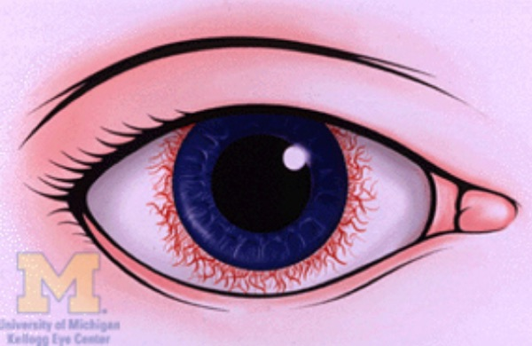
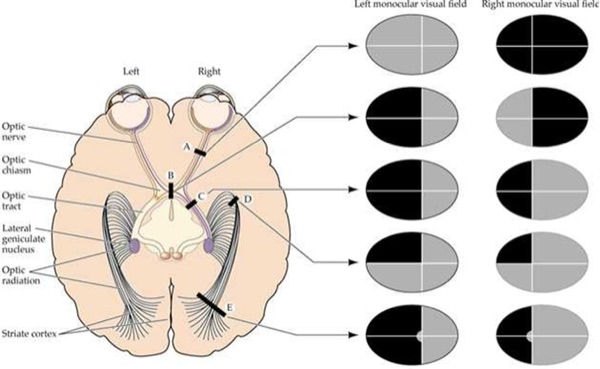
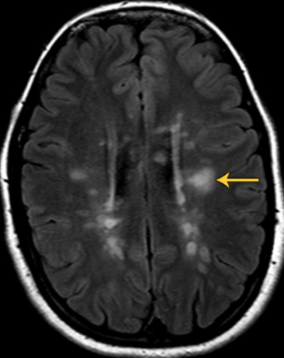
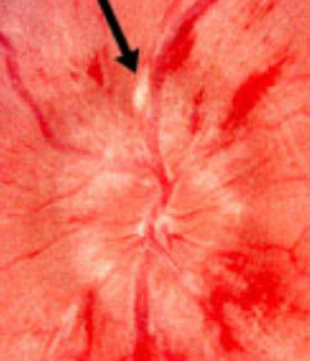
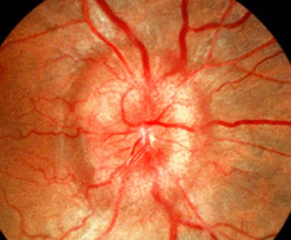
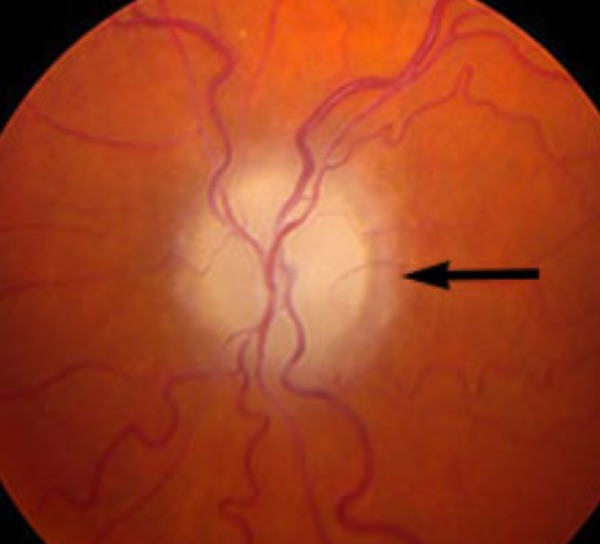

1 · Common Ophthalmological Disorders
Instructional Objectives
OPHTHALMOLOGY — Common Ophthalmological Disorders
- Compare and contrast the etiologies, epidemiology, risk factors, clinical
manifestations, differential diagnosis, diagnostic testing (including ordering and
interpretation), management (acute and chronic, including applicable rehabilitative and
palliative care), appropriate referrals, patient education, and prognosis of the following
common ophthalmological disorders:
- Conjunctivitis
- Episcleritis
- Scleritis
- Keratoconjunctivitis sicca
- Ocular manifestations of herpes infections: a. Herpes simplex virus (HSV-1) · b. Varicella zoster
- Subconjunctival hemorrhage
- Pinguecula
- Pterygium
- Orbital (post-septal) and periorbital (pre-septal) cellulitis
- Blepharitis
- Chalazion
- Hordeolum
- Ectropion
- Entropion
- Dermatochalasis
- Xanthalasma
- Lacrimal disorders: a. Dacryocystitis · b. Dacryoadenitis
- Uveitis: a. Anterior uveitis (iritis/iridocyclitis) · b. Posterior uveitis
- Keratitis
- Corneal ulcer
- Identify medical care strategies for ophthalmological disorders in the lecture topic list for the following populations: 1. infant · 2. child · 3. adolescent · 4. adult · 5. elderly
Where this sits against Clinical Pathophysiology. Clin Path I Lecture 4 covers almost this exact condition list from the mechanism side — why the tissue fails. This lecture is the management side: what it looks like, what to order, what to give, and when to refer. If you find yourself revising the same fact twice, check which half you are actually being asked for.
A standing warning about this deck. Several slides read as absolutes and are softened by their own speaker notes. Imaging is not automatic for dacryoadenitis, dacryocystitis or clearly pre-septal disease; haematology referral is not automatic for a recurrent subconjunctival haemorrhage; and perforation risk in scleritis is greatest in necrotising disease rather than uniformly. Those hedges are folded in below.
1.1 · The red eye, before you name a diagnosis
She said she will not test this section. After finishing posterior uveitis she moved on and said: “This is extra material. You can write that. I’m not going to pull test questions from this. This is not instructional objective.” It is kept here because it is the most clinically useful part of the deck and it is on the slides — but no quiz question is built on it. Read it for the ward, not for the exam.
The single most transferable thing in this lecture is a sequence rather than a fact. Complete this before naming the diagnosis:
- Visual acuity in each eye, with correction — the vital sign of the eye
- Pupils: shape, reactivity, afferent defect
- Extraocular movements, noting pain or restriction
- Corneal clarity and fluorescein staining
- Pattern of injection and discharge
- History: contact lenses, trauma, surgery, steroids
Reduced vision or an abnormal pupil is a red flag. The deck's warning is blunt: do not let obvious redness substitute for an eye examination.
Danger signs — these stop the reflex diagnosis of conjunctivitis: moderate to severe pain or consensual photophobia (pain in the affected eye when light is shone in the other eye) · reduced acuity, a relative afferent pupillary defect, or an abnormal pupil · corneal opacity, infiltrate, ulcer or dendrite · ciliary flush (a ring of redness spreading from the corneal edge), hypopyon, or markedly raised pressure · proptosis, diplopia, or painful restricted eye movement · chemical exposure, penetrating trauma, or recent eye surgery · a contact lens wearer with pain or photophobia.
Use the pattern to localise before you name:
| Localises to | Pattern |
|---|---|
| Conjunctiva | Itch or discharge; diffuse injection; vision preserved |
| Cornea | Pain and photophobia; fluorescein defect, infiltrate or opacity |
| Anterior chamber | Consensual photophobia; ciliary flush; irregular pupil |
| Sclera / orbit | Deep pain or painful eye movement; violaceous sclera, proptosis, restriction |
| Angle closure | Pain and headache with halos and nausea; cloudy cornea; mid-dilated pupil |
Two exceptions to the sequence. Chemical exposure — irrigate copiously first, before history or examination, then confirm the surface pH has normalised. Suspected open globe — rigid shield, no pressure, no tonometry, keep nil by mouth, emergency consultation.
1.2 · The diagnostic modalities
| Test | What it is | What it finds |
|---|---|---|
| Slit lamp | Low-power microscope with a high-intensity slit beam | Anterior structures: lids, cornea, conjunctiva, sclera, iris |
| Ophthalmoscopy | Direct (hand-held), indirect (lens + head-worn), or slit-lamp — the last is most common because the patient is already seated there | Vitreous, retina, retinal vessels, macula, optic disc |
| Fluorescein examination | Yellow dye instilled, viewed under a Wood lamp (ultraviolet) | Corneal abrasions, ulcers, foreign bodies |
| Fluorescein angiography | Dye injected into hand or arm, reaches the eye in 10–15 seconds, blue-flash camera. No iodine, relatively safe | Blood flow in retina and choroid: diabetic retinopathy, macular degeneration and oedema, ocular melanoma, detachment, retinitis pigmentosa |
1.3 · Eyelid disorders
What these look like


| Entropion | Ectropion | |
|---|---|---|
| Lid margin | Turns IN | Turns OUT |
| Symptom | Foreign body sensation | Tearing |
| Complication | Lashes onto the globe (trichiasis) → corneal abrasion | Exposure keratopathy |
| Causes | Ageing, cicatricial (burn, surgery, trauma, chronic inflammation, scar), congenital — plus seventh nerve palsy for ectropion only | |
| Management | Slit lamp for corneal involvement. Preservative-free tears by day, ointment at night, tape the exposed lid. Surgery is definitive. | |
Dermatochalasis — excess loose skin with orbital fat prolapse, from ageing. Patients say the lids feel heavy and they are looking through their lashes. Examine the visual fields: a demonstrated deficit is what gets blepharoplasty covered by insurance.
Xanthelasma — oval yellowish plaques, typically asymptomatic, from metabolic disorders with raised serum lipids. Work up the metabolism: lipid profile, plus fasting glucose and haemoglobin A1C for diabetes, plus liver function. Treat the underlying issue; local options are cryotherapy, laser ablation, chemical peel or excision. Recurrence is common even after effective local treatment. Caveat from the notes: many patients have entirely normal lipids, and the profile is still reasonable.
Blepharitis and meibomitis — associated with rosacea, seborrhoeic dermatitis, and Staphylococcus aureus colonisation. Burning, dryness, grittiness, itching, foreign body sensation, tearing. Signs: crusting and scaling at the lash bases, erythematous swollen lid margins, and thick, sometimes toothpaste-like lipid secretion from the meibomian glands, with a decreased or frothy tear film. Lid hygiene first. If no improvement after two weeks, topical antibiotics, then oral. Chronic — controlled rather than cured.
| Chalazion | Hordeolum (stye) | |
|---|---|---|
| Mechanism | Sterile obstruction of a meibomian gland | Acute infection, usually staphylococcal — meibomian (internal) or Zeis/Moll (external) |
| Onset | Days to weeks | 24 hours or overnight |
| The discriminator | NON-tender | TENDER |
| First-line | Warm compresses and gentle massage | |
| If it persists | Ophthalmology for steroid injection or curettage. Improvement may take months. | Ophthalmology for incision and drainage if no improvement in 2 weeks |
Refer a recurrent chalazion, or one persisting beyond 2–3 months, to rule out sebaceous carcinoma. If a hordeolum is accompanied by pre-septal cellulitis, treat with systemic antibiotics on that pathway.
1.4 · Lacrimal disorders
What these look like


| Dacryoadenitis (GLAND) | Dacryocystitis (SAC) | |
|---|---|---|
| Where | Lateral one third of the UPPER lid | Nasal aspect of the LOWER lid, below the medial canthal tendon |
| Cause | Inflammatory most common; bacterial rare; viral usually bilateral | Nasolacrimal duct obstruction |
| Extra signs | Ipsilateral preauricular node, temporal conjunctival injection, fever, leukocytosis | Mucoid or purulent discharge expressible from the lower punctum |
| Treatment | Inflammatory → corticosteroids, response within 48 h. Viral → cool compresses. Cause unclear → empiric oral antibiotics 24 h then reassess | Well & reliable → oral antibiotics 10 days. Febrile, ill or unreliable → admit, IV 48–72 h then oral to complete 10–14 days |
Do not start corticosteroids for dacryoadenitis until bacterial and other infectious causes have been reasonably excluded. And a mass ABOVE the medial canthal tendon is not dacryocystitis — suspect a lacrimal sac tumour, rare as it is.
Once dacryocystitis settles, probing and irrigation are often needed to assess whether the drainage system is patent; surgery may follow. Expect improvement 24–48 hours after antibiotics start.
1.5 · Conjunctiva and ocular surface
What these look like


Pinguecula and pterygium both come from chronic sun and wind exposure and sit almost always at 3 o'clock or 9 o'clock. The whole distinction: the pterygium extends onto the cornea, the pinguecula does not. The deck's mnemonic: pterodactyls fly (into the cornea), penguins can't. Protect from sun, dust and wind; lubricating drops. Conservative management will not make it resolve. Non-urgent referral if it grows or vision is affected; surgery if it distorts vision.
Subconjunctival haemorrhage (atraumatic) — Valsalva, bleeding disorder, antiplatelet or anticoagulant medication, hypertension. Blood under the conjunctiva, no pain, normal vision and pupil, clear cornea. History is the whole workup, and check the blood pressure if there is no explanation. Reassurance; resolves in 2–4 weeks.
The patient-education point she spent time on. The eye clears the way a bruise does — red, then purplish, then brown, then yellow. Warn them about the yellow stage: “there will be a point that they look like they’re jaundiced … so they don’t come thinking that they’re in liver failure. People do know yellow eyes and liver failure, they seem to know that association.”
And a general rule she gave alongside it: anybody who comes in with any eye condition, check their vision — with their contacts or glasses in, because what you want to know is whether it has changed.
For recurrence, the notes ask for medication review, blood pressure and targeted evaluation — not automatic haematology referral.
Chemosis is conjunctival swelling — a sign, not a diagnosis. Non-specific for irritation: allergy, infection, thyroid eye disease, angioedema, trauma, orbital cellulitis, impaired orbital venous drainage. Chemosis WITH proptosis, restricted movement, reduced vision or an afferent pupillary defect is urgent.
1.6 · Conjunctivitis, all of it
What these look like


Acute is 4 weeks or less; chronic is more than 4 weeks. Two examination findings do most of the sorting:
| Finding | Appearance | Points to |
|---|---|---|
| Papillae | Red at the surface, paler at the base — her analogy: “it almost looks like a strawberry” | Bacterial (except chlamydial), allergic |
| Follicles | Pale at the surface, redder at the base | Chlamydial, viral |
| Preauricular node | — | Chlamydial, gonococcal, viral |
| Type | Giveaway | Treatment |
|---|---|---|
| Allergic | ITCH, bilateral, watery/stringy discharge, chemosis, papillae, no node | Avoid the allergen; cool compresses, artificial tears, topical histamine blocker ± mast cell stabiliser (olopatadine does both), systemic antihistamine |
| Viral | Adenovirus. Profuse watery discharge, follicles, tender preauricular node. Starts one eye, spreads to the other. Recent upper respiratory infection | Cool compresses, artificial tears, contagious precautions. Self-limiting: often worse over week one, resolving in 2–3 weeks. Refer if >3 weeks, or photophobia or vision loss after onset |
| Bacterial | Thick yellow/white discharge, often unilateral, papillae, usually no node | Immunocompetent adult: topical broad-spectrum antibiotic (e.g. fluoroquinolone) + contagious precautions |
| Gonococcal | Severe purulent discharge WITH a palpable preauricular node — the exception to the no-node rule | Newborn = emergency. Hospitalise, systemic ceftriaxone, cultures and Gram stain, test for chlamydia and dissemination. Untreated risk: corneal perforation |
| Chlamydial (adult inclusion) | Serotypes D–K. Chronic (a month or more), stringy mucoid discharge, follicles, unresponsive to topical medication. Often concurrent asymptomatic urogenital infection | Confirm with conjunctival nucleic acid amplification or direct fluorescent antibody. Doxycycline 100 mg twice daily for 7 days. Evaluate for other sexually transmitted infections; notify partners |
| Chlamydial (neonatal) | Serotypes D–K from maternal secretions; may have pneumonia | Erythromycin 50 mg/kg/day divided four times daily for 14 days. Monitor infants under 6 weeks for infantile hypertrophic pyloric stenosis — erythromycin is a motilin receptor agonist |
| Autoimmune | Recurrent/chronic hyperaemia, minimal pain, NO discharge, systemic complaints. Pemphigoid, Stevens-Johnson, Sjögren, graft-versus-host | Routine ophthalmology referral |
Trachoma — serotypes A, B, C, and the leading infectious cause of blindness worldwide. Most active cases are asymptomatic. Mass drug administration with azithromycin 1 g orally as a single dose where prevalence is ≥5 per cent. The chain to blindness is worth memorising: conjunctival inflammation → eyelid scarring → entropion → trichiasis → blindness. Trichiasis needs surgery.
Urgent ophthalmology in bacterial conjunctivitis if: immunocompromised, contact lens wearer, recent eye surgery, foreign body, corneal opacity or suspected keratitis, or no improvement in 24 hours.
1.7 · Episcleritis and scleritis
What these look like


| Episcleritis | Scleritis | |
|---|---|---|
| Aetiology | Often idiopathic, often no systemic association | Often systemic autoimmune |
| Pain | Mild, acute onset, focal. No discharge, no photophobia | Severe boring pain, worse at night, radiating to face and periorbital region |
| Appearance | Redness, often sectoral | Violaceous hue — choroid showing through thinned sclera. Pain with eye movement |
| Cotton-tip test | Vessels CAN be moved slightly | Vessels CANNOT be moved |
| Confirmatory test | 2.5% phenylephrine, wait 15 minutes — vessels blanch | — |
| Management | Artificial tears + oral anti-inflammatory taken WITH FOOD. Refer if no response in 2 days | URGENT referral. Slit lamp and fundoscopy, work up the systemic cause. Sclera at risk of perforation, may need a surgical patch |
| Prognosis | Usually self-limited; may recur in either eye | Decreased PAIN is the first sign of response, even if the inflammation looks unchanged |
The notes refine the slide: non-infectious anterior scleritis commonly begins with systemic non-steroidal anti-inflammatories, with corticosteroids and immunomodulators for severe, necrotising, posterior or refractory disease — and perforation risk is greatest in necrotising disease, not uniformly.
1.8 · Keratitis and corneal ulcer
What these look like



Ciliary flush — a ring of red vessels spreading from the limbus around the cornea, from the anterior ciliary arteries. It means inflammation of cornea, iris or ciliary body, and appears in corneal inflammation (ulcer, keratitis), anterior uveitis, and acute glaucoma. It is the finding that rules out simple conjunctivitis.
Keratitis. Risks: corneal trauma, dry eyes, contact lens overwear, topical ocular corticosteroids. Bacterial, viral, fungal; parasitic rare. Pain, foreign body sensation, tearing, photophobia, redness at the corneal edge, blurred vision. Signs: corneal opacification, a “broken up” corneal light reflection, ciliary flush. Classic ring infiltrate = Acanthamoeba, in lens wearers with poor hygiene such as rinsing lenses in tap water. Urgent referral within 24 hours for slit lamp with fluorescein. Undertreated → corneal scarring or perforation → endophthalmitis → possible removal of the eye.
| Herpes SIMPLEX keratitis | Herpes ZOSTER keratitis | |
|---|---|---|
| Corneal sign | TRUE DENDRITE — tree-branching, elevated edges, terminal end bulbs. Pathognomonic | PSEUDODENDRITE — lacks the branch pattern, the elevated edges and the end bulbs |
| Patient | Often younger | Often older; rare in children; also immunosuppressed |
| Skin | Not dermatomal, may not respect the midline (only ~10% of primary disease is bilateral) | Dermatomal, most often V1, respects the midline, unilateral, often spares the lower lid. Hutchinson sign (nose tip) → higher ocular risk |
| Treatment | Oral antivirals (aciclovir, valaciclovir, famciclovir) ×10 days. Ideally start within 72 hours of rash onset. IV aciclovir for severe, disseminated, orbital, retinal, central nervous system or significantly immunocompromised disease | |
| Prognosis | Good, benign, self-limited. Recurrences common under stress | Good to poor by corneal involvement. Postherpetic neuralgia can be devastating |
NO TOPICAL GLUCOCORTICOIDS BY THE PRIMARY CARE PROVIDER IN ACTIVE HERPES SIMPLEX EPITHELIAL DISEASE. That decision belongs to ophthalmology. Prevention: recombinant zoster vaccine for adults 50 and over, and immunocompromised adults 19 and over.
Corneal ulcer. Contact lens use is the major risk factor. Painful eye, the patient resists opening it, photophobia, foreign body sensation, tearing, blurred vision. Ciliary flush and a corneal defect. EMERGENT referral — a step above keratitis. Slit lamp, fluorescein, swab central or large ulcers for culture. Start a broad-spectrum topical agent (fourth-generation fluoroquinolone). Steroid drops can worsen infection if started too early — especially fungal or herpetic — so leave that to ophthalmology. Next-day follow-up; most heal in 2–3 weeks; untreated can blind; severe cases may need a transplant.
1.9 · Uveitis
What these look like


| Anterior (iritis, iridocyclitis) | Posterior (choroiditis, retinitis) | |
|---|---|---|
| Aetiology | Idiopathic, autoimmune | Idiopathic, autoimmune, infectious — toxoplasmosis, cytomegalovirus |
| Pain | Yes — with photophobia and redness at the corneal edge | NO pain if isolated |
| Vision | Often preserved | Blurred, with floaters, scotomas, metamorphopsia |
| Signs | Cells in the anterior chamber, consensual photophobia, ciliary flush, variable pressure, irregular pupil stuck to lens or cornea, keratic precipitates (white cell deposits on the corneal endothelium) | Cells in the posterior vitreous, vitreous haze, retinal or choroidal inflammation |
| Referral | Urgent, within 24 h — delay may cost vision | Refer for slit lamp and dilated fundoscopy; possibly fluorescein angiography to separate active from inactive lesions |
| Treatment | Infectious → treat the organism. Non-infectious → topical corticosteroids | Does NOT respond to topical treatment — may need an intraocular corticosteroid injection |
| Course | Most acute cases respond dramatically in days to weeks | Develops far more slowly, may last years |
Recurrent uveitis, or uveitis with features suggesting systemic autoimmune disease, needs a thorough systemic evaluation. And per the notes, infection must be excluded before immunosuppression.
1.10 · Pre-septal and post-septal cellulitis
What these look like


Both come from direct extension from a bacterial sinus, skin or dental infection. In diabetic, elderly or immunocompromised patients, consider fungus — aspergillosis, mucormycosis.
| PRE-septal (periorbital) | POST-septal (orbital) | |
|---|---|---|
| The giveaway | The eye itself is WHITE | The eye itself is RED and cannot move fully |
| Symptoms | Both: periocular pain, fever and chills, warmth around the eye | |
| Post-septal only | — | Pain and difficulty with eye movement, reduced vision, diplopia |
| Signs | Diffuse balloon-like lid oedema, erythema, tenderness; variable conjunctival injection | Significant injection, proptosis, decreased and painful movement, possible afferent pupillary defect, decreased vision |
| Management | Mild → outpatient oral antibiotics 10–14 days against Staphylococcus (including resistant strains) and Streptococcus | ALL post-septal → hospitalise, broad-spectrum IV 48–72 h, then oral at least a week |
Also admit a pre-septal patient if: moderate-severe or toxic, poor compliance expected, a child of 5 years or younger, or no improvement after oral antibiotics started.
Workup: contrast computed tomography of orbits and paranasal sinuses, complete ocular examination with fundoscopy, Gram stain and culture of any drainage, complete blood count with differential, blood cultures. May need ear-nose-throat, oral and maxillofacial surgery, or infectious disease consults. Untreated → intracranial spread → meningitis or cavernous sinus thrombosis. Expect improvement in 24–48 hours.
Notes caveat: mild, clearly pre-septal disease with normal vision, pupils and painless full movements may be managed clinically without routine imaging.
1.11 · Referral timing — explicit disposition
Same caveat as 1.1 — this table comes from the section she called extra material and said she would not pull test questions from. Worth knowing; not examinable.
| Urgency | Conditions |
|---|---|
| EMERGENT — now | Chemical injury (irrigate first), open globe, acute angle closure, orbital cellulitis, endophthalmitis |
| SAME DAY | Keratitis or corneal ulcer, anterior uveitis, scleritis, ocular herpes zoster ophthalmicus |
| URGENT — 24–48 hours | Unexplained decreased vision, persistent pain or photophobia, atypical or worsening red eye |
| ROUTINE | Uncomplicated conjunctivitis, chronic eyelid or ocular surface disease |
Routine is only appropriate when ALL of these hold: acuity preserved, pupils and movements normal, cornea clear with no fluorescein uptake or infiltrate, no significant pain or photophobia, and reliable follow-up. Every assessment ends with a documented disposition and a safety net — acuity, key negatives, suspected diagnosis, urgency, destination, and explicit return precautions.
2 · Neuro-Ophthalmology
Instructional Objectives
OPHTHALMOLOGY — Neuro-ophthalmology
- Describe nystagmus
- Describe the afferent pupillary light pathway.
- Describe the parasympathetic (efferent pupillary) pathways.
- Describe the sympathetic pathways (oculo-sympathetic).
- Describe the accommodation reflex.
- Compare and contrast the etiologies, epidemiology, risk factors, clinical
manifestations, differential diagnosis, diagnostic testing (including ordering and
interpretation), management (acute and chronic, including applicable rehabilitative and
palliative care), appropriate referrals, patient education, and prognosis of the following
common neuro-ophthalmological disorders:
- Relative afferent pupillary defect (Marcus Gunn pupil)
- Horner syndrome
- Argyll Robertson pupil
- Adie tonic pupil
- Cranial nerve III, IV, and VI palsies
- Ptosis
- Anisocoria
- Differentiate the clinical presentation of pre-and post-chiasm lesions.
- Identify medical care strategies for ophthalmological disorders in the lecture topic list for the following populations: a. adult · b. elderly
How to read this lecture. Almost every diagnosis here is decided by which pupil is the abnormal one and what it does in the dark. Get the four pathways straight first — afferent light, parasympathetic efferent, sympathetic, and near/accommodation — and the named pupils fall out of them rather than needing to be memorised as a list.
2.1 · Nystagmus Objective a
What these look like

Definition, as the deck words it: an involuntary, biphasic, rhythmic, tremor-like oscillating movement of the eyes. It is either congenital (infantile or latent) or acquired.
It is usually symptomatic — unless it was acquired before the age of 8. That single exception is the reason a child with long-standing nystagmus may report nothing at all. Symptoms, when present:
| Symptom | What the patient means |
|---|---|
| Vertigo | The patient or the room is spinning. Often the primary symptom, and commonly points to a vestibular problem. |
| Oscillopsia | The environment or an object appears to move back and forth. |
| Blurred vision | The retinal image is being dragged by the oscillation. |
| Abnormal head position | A compensation for the blurring, not a separate problem. |
Jerk nystagmus is classified by trajectory and named for the direction of the FAST beat — vertical, horizontal or torsional. It increases with gaze in the direction of the fast phase. Horizontal jerk nystagmus is the most common form: the eyes drift slowly to one side and snap quickly back.
Who gets referred and worked up. Infants and young children with nystagmus; nystagmus acquired during adolescence or adulthood; and concerning or non-physiologic nystagmus in adults. The pathway is ophthalmology for a complete ophthalmic exam → initial imaging → labs if relevant, and in every case the underlying aetiology must be addressed. Slide 5
2.2 · The three pupillary pathways Objectives b, c, d
Start with pupil size itself. Pupillary size is set by the AVERAGE of the illumination detected by each eye. Cover one eye of a normal person and watch the other: the pupil enlarges, because the average illumination has effectively been halved. That one fact explains why the swinging flashlight test works at all.
| Pathway | Route | Effect |
|---|---|---|
| Afferent light (objective b) | Retinal ganglion cells → CN II → optic tracts → synapse in the pretectal nuclei. Each pretectal nucleus sends axons to BOTH Edinger-Westphal nuclei. | This bilateral crossing is why light in one eye constricts both pupils. |
| Parasympathetic efferent (objective c) | Preganglionic fibres from the Edinger-Westphal nucleus travel along CN III to the ciliary ganglion, then short ciliary nerves to the iris sphincter. | MIOSIS |
| Sympathetic (oculo-sympathetic) (objective d) | First order hypothalamus → brainstem and cervical cord, synapsing at the ciliospinal centre of Budge, C8–T2. Second order exits the cord, loops up through the brachial plexus over the lung apex to the superior cervical ganglion. Third order follows the carotid to the radial muscle of the iris. | MYDRIASIS |
Why the three-neuron sympathetic chain is worth the effort. The whole of Horner syndrome localisation below is just which of those three neurons is damaged. The second-order neuron's detour over the lung apex is why a Pancoast tumour causes it, and the third-order neuron's ride along the carotid is why a dissection does.
Opioids are parasympathomimetics. Overdose gives reduced mental status, respiratory depression under 12 per minute, reduced tidal volume, and pupillary constriction. It is the mental status and the respiration that matter clinically, not the pupil. Reversal is naloxone, preferably intravenous, now available over the counter as an intranasal preparation. Slide 12
2.3 · The accommodation reflex, and light-near dissociation Objective e
On shifting gaze from far to near, three things happen — to the lens, the pupil and the globes. All three share one afferent limb: retinal input via CN II and the optic tract to the lateral geniculate nucleus and visual cortex.
| Component | What happens | Result |
|---|---|---|
| Lens | Ciliary smooth muscle contracts | Lens becomes more convex → increased refractive power |
| Pupil | Constriction | Improves up-close focus |
| Globes | Both eyes adduct | Convergence |
The key asymmetry. The pupillary near response travels from visual cortex to iris sphincter skipping a portion of the route the pupillary light pathway takes. That difference is the entire basis of “light-near dissociation” — a pupil that will not react to light but still constricts to near. Argyll Robertson and Adie pupils both live in that gap.
2.4 · Anisocoria — deciding which pupil is abnormal Objective f7
The governing principle. The efferent limb of the pupillary reflex is bilateral, so both pupils receive the same command and should always be the same size. They should only be unequal when the efferent pathways are not working properly.

| Ask | If yes | Then the abnormal pupil is |
|---|---|---|
| Is the difference greater in the DARK? | The smaller pupil is failing to dilate | The SMALL one — think Horner, opioids, Argyll Robertson |
| Is the difference greater in the LIGHT? | The larger pupil is failing to constrict | The LARGE one — think CN III palsy, Adie, pharmacologic mydriasis |
| Is it equal in light and dark? | Both pupils are working | Physiologic anisocoria — the most common cause, usually under 0.4 mm difference |
When the large pupil is abnormal, the deck's causes are an ocular condition preventing constriction, or pharmacologic mydriasis. Anticholinergics give a pupil that is usually 8 mm or more and does not constrict to light at all — atropine and other anticholinergic mydriatic or cycloplegic drops are the classic culprits.
2.5 · The four named pupils Objectives f1–f4
What these look like
| Marcus Gunn (RAPD) | Horner syndrome | Argyll Robertson | Adie tonic | |
|---|---|---|---|---|
| Limb at fault | Afferent | Sympathetic | Pretectal / dorsal midbrain | Parasympathetic (ciliary ganglion) |
| Pupil size | Equal at rest | Miosis, unilateral | Miosis, BILATERAL | Mydriasis, often unilateral |
| Light reaction | Both pupils DILATE when the light swings to the affected eye | Normal | Absent | Poor |
| Near reaction | Normal | Normal | Brisk — light-near dissociation | Present but slow and tonic |
| Hallmark | Positive swinging flashlight test | DILATION LAG | Bilateral small pupils sparing near | Sector paralysis of the iris on slit lamp |
| Classic cause | Retina or optic nerve lesion | Damage anywhere along the sympathetic chain; often idiopathic | Tertiary syphilis | Inflammation of the ciliary ganglion, then aberrant reinnervation |
Marcus Gunn pupil. An afferent defect, usually at the level of the retina or optic nerve. Moving a bright light from the unaffected eye to the affected eye makes both eyes dilate, because the ability to perceive that light is diminished — the average illumination the brain is working from has just dropped.
Horner syndrome — dilation lag is the hallmark. The anisocoria is most evident in the first 4–5 seconds after dimming the lights, which is exactly when a normal sympathetic pathway would be actively dilating. After 10–15 seconds the pupil does dilate a little — but that is passive relaxation of the iris sphincter, not sympathetic function returning. Slide 29
Classic triad: ptosis, miosis, and anhidrosis — with the caveat that anhidrosis may be absent depending on where along the pathway the lesion sits. Diagnostic test: dilute apraclonidine drops, which are ineffective in a normal pupil but cause mydriasis in the Horner pupil.
| Horner — neuron order | Causes named in the deck |
|---|---|
| First order | Brainstem strokes and tumours; spinal cord lesions above T1 |
| Second order | Pancoast tumour (superior pulmonary sulcus), thyroid cancer |
| Third order | Carotid dissection, cavernous sinus pathology |
| Often idiopathic — the deck says so in capitals, so a negative workup is a real outcome rather than a failure. | |
The one that must not be missed. Carotid artery dissection, traumatic or spontaneous, can present with focal neurologic complaints and Horner syndrome — a third-order Horner. Cases have also been reported after COVID-19 with intubation and mechanical ventilation. Slide 15
Argyll Robertson pupil. Bilateral miosis; the pupils do NOT constrict to light but DO constrict quickly to near accommodation — light-near dissociation in its purest form. Classically tertiary syphilis, and those patients have other findings: tabes dorsalis from posterior column involvement, with sensory loss. The lesion is suspected to sit in the pretectal area of the superior colliculus (dorsal midbrain).
Adie tonic pupil (Holmes-Adie syndrome). Inflammation — infectious or autoimmune — damages the ciliary ganglion or the short ciliary nerves, followed by aberrant reinnervation. The affected pupil shows mydriasis with a poor light response. Typically women in their 30s, often unilateral; there may be photophobia and blurred vision but it is often asymptomatic. Look for sector paralysis on slit lamp, decreased regional corneal sensation, and absent Achilles or patellar reflexes.
2.6 · Cranial nerve III, IV and VI palsies Objective f5
What these look like

| CN III (oculomotor) | CN IV (trochlear) | CN VI (abducens) | |
|---|---|---|---|
| Muscle | Superior division: levator palpebrae, superior rectus. Inferior division: inferior rectus, medial rectus, inferior oblique, and parasympathetics to the ciliary ganglion | Superior oblique — intorts and depresses | Lateral rectus — abducts |
| Diplopia | With ptosis and mydriasis | VERTICAL, binocular, worse with postural head change | HORIZONTAL, binocular |
| Most common cause | Microvascular — diabetes, hypertension | Congenital when isolated, even in adults. Acquired → trauma, even mild, or microvascular | Children: intracranial tumours, especially brainstem and posterior fossa. Adults: microvascular; also major trauma or skull base fracture |
| The dreaded cause | Compression by an enlarging intracranial aneurysm, most commonly of the posterior communicating artery — threat of rupture within hours to days | — | — |
A third nerve palsy is classified two ways at once: complete versus incomplete, and pupil-INVOLVED versus pupil-SPARED.
| Pupil involved | Pupil spared |
|---|---|
| STAT CTA head or MRA brain — this is the vascular pathway, and the aneurysm is what you are ruling out | Reassurance and imaging, but it does not need to be STAT |
The anatomical reason: the parasympathetic fibres run on the outside of the nerve, so an external compression reaches them first, while microvascular disease infarcts the core and spares them. Slide 41
CN IV is the odd one out anatomically: it is the only nerve arising from the dorsal surface of the brainstem, and it crosses — the left trochlear nucleus sends fibres to the RIGHT eye. Clinically the patient tilts the head to the opposite side of the problem eye to compensate.
| Situation | Management |
|---|---|
| Isolated, atraumatic CN IV or CN VI palsy | MRI brain with and without contrast. Check haemoglobin A1C if there are risk factors and no known diabetes. |
| Traumatic | Observe roughly 6 months before considering corrective treatment. In the interim, patch one eye to relieve binocular diplopia. |
| Congenital | Patching, per the deck. |
2.7 · Ptosis Objective f6
Definition: drooping of the upper eyelid from a congenital or acquired abnormality of the muscles that elevate it. Three structures hold the lid up, and knowing which is which is how you localise the cause:
| Structure | Innervation | Role |
|---|---|---|
| Levator palpebrae superioris | CN III | Elevates the upper lid |
| Müller's muscle | Sympathetic | An additional 1–2 mm of elevation |
| Orbicularis oculi | CN VII | Closes the lids — the antagonist |
| Levator function | Laterality | The giveaway | |
|---|---|---|---|
| CN III palsy | Reduced | Usually unilateral | Impaired extraocular movement and mydriasis in the same eye |
| Horner syndrome | NORMAL — only Müller's is out, hence the mild droop | Usually unilateral | Miosis in the same eye |
| Myasthenia gravis | Reduced | Unilateral or bilateral | Variable throughout the day — fatigability is the whole diagnosis |
Ptosis plus a SMALL pupil is Horner. Ptosis plus a LARGE pupil is a third nerve palsy. That one line resolves most of the exam questions in this objective, and the third possibility — ptosis that comes and goes through the day with a normal pupil — is myasthenia.
2.8 · Pre- and post-chiasm lesions Objective g

| Lesion site | Field defect | Pre- or post-chiasm |
|---|---|---|
| Optic nerve | Total blindness of that eye | PRE — monocular, because the fibres have not crossed yet |
| Optic chiasm | Bitemporal (heteronymous) hemianopsia | At the chiasm — the crossing nasal fibres are hit |
| Optic tract | Left homonymous hemianopsia (for a right tract lesion) | POST |
| Optic radiation | Left superior quadrantanopia | POST |
| Striate cortex | Left homonymous hemianopsia WITH MACULAR SPARING | POST |
The rule that generates all five rows. A monocular defect is pre-chiasmal — one eye's fibres, before any crossing. A bitemporal defect is at the chiasm. Anything homonymous — the same side of the field in both eyes — is post-chiasmal, and the further back the lesion, the more congruent and the more likely to spare the macula.
2.9 · Care strategies, adult and elderly Objective h
The deck's own summary, in order: begin with a thorough history and physical examination; labs and imaging (head CT or brain MRI) if indicated; ophthalmology referral; and appropriate specialist referral — neurology, vascular surgery, or neurosurgery. Slide 54
| Presentation | Urgency |
|---|---|
| CN III palsy with pupil involvement | EMERGENT — STAT CTA or MRA for aneurysm |
| Horner syndrome with neck pain, trauma or focal neurology | EMERGENT — carotid dissection |
| New nystagmus acquired in adolescence or adulthood | Work up — ophthalmology, imaging, labs |
| Isolated atraumatic CN IV or VI palsy | MRI with and without contrast; A1C if at risk |
| Pupil-sparing CN III palsy | Imaging, but not STAT |
3 · Acute Vision Loss
Instructional Objectives
OPHTHALMOLOGY — Acute Vision Loss
- Compare and contrast the etiologies, epidemiology, risk factors, clinical
manifestations, differential diagnosis, diagnostic testing (including ordering and
interpretation), management (acute and chronic, including applicable rehabilitative and
palliative care), appropriate referrals, patient education, and prognosis of the following
acute vision loss disorders:
- Amaurosis fugax
- Acute angle closure glaucoma
- Optic neuritis
- Retinal detachment
- Retinal vascular occlusion: a. Central retinal artery occlusion (CRAO) · b. Branch retinal artery occlusion (BRAO) · c. Central retinal vein occlusion (CRVO) · d. Branch retinal vein occlusion (BRVO)
- Anterior ischemic optic neuropathy (AION): a. Arteritic AION, associated with Giant cell (temporal) arteritis · b. Non-arteritic AION
- Identify medical care strategies for acute vision loss in the lecture topic list for the following populations: 1. adult · 2. elderly
Every single person who has sudden acute vision loss is having a stroke until proven otherwise. That is why everyone gets an MRA, even with no weakness, no numbness and no speech difficulty — because you can have a stroke with no other symptom than acute vision loss. She repeated the sentence and added that Professor Alaya will ask this question when you reach the emergency department rotation.
3.1 · The four questions that separate these diagnoses
Jaquith opened the lecture by telling the class which details to highlight, because these conditions overlap heavily and the discriminating information is in the history rather than the fundus:
| Ask | Answer | Points toward |
|---|---|---|
| One eye or both? | One | Nearly all of them — amaurosis fugax, occlusions, detachment, optic neuritis, AION |
| Both | Papilledema, or a lesion at or behind the chiasm | |
| Sudden or gradual? | Seconds, then recovers | Amaurosis fugax |
| Seconds, and stays | CRAO | |
| Hours to days | Optic neuritis (and detachment advances over days) | |
| Central or peripheral? | Peripheral first, central preserved | Chronic open-angle glaucoma — “tunnel vision” |
| Central, with colour desaturation | Optic neuritis | |
| Painful or painless? | PAINFUL | Acute angle-closure glaucoma (severe, at rest), or optic neuritis (on eye movement) |
| PAINLESS | Everything else — amaurosis fugax, all four occlusions, detachment, AION, papilledema |
The word “curtain” belongs to TWO diagnoses. Jaquith flagged this explicitly: “there's a couple of conditions where they use the word curtain, so don't confuse it.” Amaurosis fugax — the curtain comes down and then lifts within seconds to minutes. Retinal detachment — the curtain comes down and stays, advancing over days. Duration is the discriminator, not the word.
3.2 · Amaurosis fugax Objective a1
Transient monocular vision loss, also called “fleeting blindness”. Lasts a few seconds to minutes. It can involve both eyes but is usually one.
If it lasted hours, it was not a transient ischemic attack. The lecturer was explicit. Duration is the first filter you apply.
| Facet | Content |
|---|---|
| Etiology | Retinal emboli of carotid (TIA) or cardiac origin; also retinal vascular spasm. Most commonly a TIA. |
| Risk factors | Older age, diabetes, hypertension, atherosclerosis, cardiac valve disease, intravenous drug use, sickle cell, coagulation disorders, Raynaud's |
| Manifestations | A “curtain” coming down, transient. Anything from mild blurring or fogging to complete blackness. May involve part or all of the field — upper or lower half, temporal or nasal, small central or paracentral areas, or the whole field. Painless. |
| Diagnosis | Carotid Doppler if a carotid source is suspected. Echocardiogram if cardiac. MRA to evaluate all the arteries for emboli — and per the flag above, everyone gets it. |
| Treatment | Treat the underlying cause — she called this the essential point. To reduce stroke risk: aspirin and clopidogrel. Carotid emboli → carotid endarterectomy. Raynaud's or vascular spasm → calcium channel blockers. |
| Prognosis | About 85% recover fully; the rest progress to a central retinal artery occlusion. Early evaluation reduces the risk of permanent visual loss. |
| Education | A TIA is a major warning sign that a stroke is coming. Transient does not mean benign. |
3.3 · Glaucoma — acute closed-angle and chronic open-angle Objective a2
What these look like


| ACUTE — closed angle | CHRONIC — open angle | |
|---|---|---|
| Mechanism | The iris blocks the drainage circuit → intraocular pressure rises dramatically | Trabecular meshwork abnormality next to the canal of Schlemm, secondary to aging → optic nerve damage, with or without raised pressure |
| Frequency | Less common | MUCH more common |
| Pain | Severe and sudden eye pain | Painless |
| Symptoms | Decreased vision, coloured halos around lights, headache, nausea and vomiting | Asymptomatic in most patients. Peripheral field goes first — patients say “tunnel vision” — then complete blindness |
| Signs | Pupillary dilation, hazy cornea, bilateral narrow or occluded angle | Optic nerve cupping, rim pitting, bayoneting (vessels with narrow angulations), splinter haemorrhages, rim thinning, field defects |
| Pressure | 40–80 mmHg on tonometry or gonioscopy | May be normal OR elevated |
| Other risks | Systemic anticholinergics (atropine), nebulized bronchodilators, prior anterior uveitis, lens dislocation, African American race, obstruction from tumour or scarring | African American race, Hispanic ethnicity, adults over 40, diabetes, age, family history, hypertension, myopia |
| First-line | Topical pilocarpine (alpha-blocker) or timolol (beta-blocker); IV acetazolamide then mannitol or isosorbide | Latanoprost, tafluprost, timolol drops |
| Definitive | Laser peripheral iridotomy, 1–2 days after onset — lets fluid pass from the posterior to the anterior chamber | Laser trabeculoplasty if refractory or advanced. Surgery is definitive for both forms. |
A patient went to the emergency department with an intractable headache — everything had been tried, nothing worked — and was admitted. After multiple doctors, a PA assessed him properly, found a red eye, and diagnosed glaucoma. The chief complaint was a headache, and it was localised behind the eye. Glaucoma is also a leading cause of blindness worldwide, and untreated it ends in blindness.
Patient education, and she meant it personally: everyone should have annual eye examinations — that screening is what finds asymptomatic chronic open-angle disease before the field is gone. Some patients stay on drops for life and never have surgery, when the surgical risk outweighs the benefit over their life expectancy.
3.4 · Optic neuritis Objective a3
What these look like

| Facet | Content |
|---|---|
| Epidemiology | 18 to 45 years old, 75% female — a much younger group than everything else in this lecture |
| Etiology | Inflammation due to multiple sclerosis, autoimmune disorders, postviral, or idiopathic |
| Symptoms | Unilateral vision loss over hours to several days, with PAINFUL EYE MOVEMENT. Often central vision loss and loss of colour vision |
| Signs | Often a normal-appearing disc. Relative afferent pupillary defect (Marcus Gunn) |
| Diagnosis | Refer to ophthalmology. Complete ophthalmic exam — slit lamp, dilated fundoscopy, colour vision assessment — plus a neurological exam. MRI brain AND orbits, with and without contrast |
| Escalation | If MRI shows at least 2 characteristic demyelinating lesions, ophthalmology treats and refers to neurology or neuro-ophthalmology |
| Treatment | Corticosteroids if a demyelinating cause is found |
| Prognosis | Spontaneous recovery is the rule. Without treatment vision begins improving within a few weeks, may continue for months, and is usually normal within a year |
| Education | Recurrence carries a greater risk of multiple sclerosis. Do not treat the episode and stop — find out why it happened, or you miss the bigger problem |
3.5 · Retinal detachment Objective a4
What these look like

| Facet | Content |
|---|---|
| Pathophysiology | Traction detachment that commonly follows a retinal tear or hole. Three types: rhegmatogenous, traction, serous/exudative |
| Epidemiology | Most common after age 50 — the vitreous humor shrinks with age |
| Risk factors | Myopia (contracted ciliary muscle), trauma, cataract extraction, diabetes, tumour, connective tissue disease, family history |
| Early symptoms | New flashing lights and floaters — these represent the retinal TEAR, not the detachment itself |
| Then | Grey or black shadows in the peripheral field, which may cover the whole eye within days. A “curtain or dark cloud” across the field |
| The escalation | If the macula is involved → sudden loss of vision in that eye |
| Odd but useful | The visual loss can change with head position, because the detached retina is floating loose |
| Diagnosis | Direct and dilated ophthalmoscopy: retina elevated, grey cloud with folds, a pigmented well-demarcated area, and tears that are orange and crescent shaped. Ultrasound is MORE SENSITIVE than the fundoscopic exam and determines the type |
| Treatment | EMERGENCY — refer immediately. Surgical repair urgently or within a week depending on type. Options: laser photocoagulation, cryotherapy, pneumatic retinopexy, vitrectomy, scleral buckle |
Her disposition, verbatim in substance: this one needs to be seen right now. If no ophthalmologist can take them, they go to a hospital that has one. Not tomorrow.
3.6 · The four retinal vascular occlusions Objective a5
| CRAO — artery | CRVO — vein | |
|---|---|---|
| Mechanism | Embolus — arteriosclerosis, atherosclerosis, carotid or cardiac emboli | Thrombus occluding the central retinal vein |
| Frequency | Less common | MORE common than CRAO |
| Onset | Painless profound loss over a few SECONDS | Sudden and painless; sometimes gradual over days to weeks |
| Acuity | Counting fingers to light perception; an “island” of vision in the temporal field | Blurring to loss |
| Pupil | Slow to direct light, but BRISK when the other eye is illuminated — she called this a huge clinical clue | — |
| Fundus | Pale swelling of the posterior segment with a CHERRY-RED SPOT at the fovea; emboli visible in the central artery | “BLOOD AND THUNDER” — disc swelling, venous dilation, cotton wool spots, retinal haemorrhages |
| Risk factors | Shared: hypertension, diabetes, hyperlipidaemia, Raynaud's, age over 50, hypercoagulable disorders, giant cell arteritis, endocarditis, atrial myxoma, obesity. CRAO adds atrial fibrillation | |
| Later | Neovascularization occurs weeks to months after the occlusion in both | |
| Confirmatory | Colour fundus photography and fluorescein angiography | |
| Treatment | Prompt. High-concentration inhaled oxygen and digital massage over the eyelid; IV acetazolamide to lower pressure; anterior chamber paracentesis; thrombolytic infusion into the ophthalmic artery within 8 hours | Urgent ophthalmology referral to restore blood flow; evaluate and treat the underlying disorders |
CRAO is a stroke in the eye. Irreversible retinal damage may occur after 90 minutes. And the systemic implication matters as much as the eye: the retinal arteries are tiny, so if plaque broke off the carotid and reached one, there is a great deal more plaque still in that carotid — stroke risk rises at the onset of a retinal artery occlusion.
The branch forms. BRAO and BRVO are the same disease as their central counterparts, differing only in where the blockage sits. A branch vessel is occluded rather than the main trunk, so only part of the retina is affected and the field loss is partial and localised rather than widespread. Everything else — risk factors, workup, referral — is the same. The lecturer was explicit that this is all there is to it.
3.7 · Papilledema
What these look like

This is the one condition here that is NOT about intraocular pressure. Papilledema is swelling of the optic disc caused by raised INTRACRANIAL pressure — pressure inside the skull pushing on the optic disc. Every other pressure in this lecture is inside the globe. She drew the line explicitly.
| Facet | Content |
|---|---|
| Causes | Tumour, trauma, intracranial infection (meningitis), haemorrhage, vitamin A toxicity |
| Visual symptoms | Non-specific: flickering vision, blurry vision, double vision |
| Systemic symptoms | Non-specific signs of raised intracranial pressure: nausea, vomiting, headache |
| Fundus | Engorged retinal veins, swollen optic disc, with or without retinal haemorrhages |
| Diagnosis | Lumbar puncture — an increased opening pressure confirms raised intracranial pressure. MRI and/or CT head to rule out a mass lesion |
| Treatment | Treat the underlying disorder |



Papilledema pushes the disc OUT. Glaucoma cups it IN. She stressed how distinctly different the two look, and it is the single most reliable way to tell them apart at the fundus.
3.8 · Anterior ischemic optic neuropathy Objective a6
Definition: sudden loss of blood flow to the front part of the optic nerve — the optic disc, causing rapid, painless vision loss. Common to both forms: sudden painless loss of side or central vision, swelling and PALENESS of the optic nerve head, and involvement of one eye first, though the second eye is at risk.
| ARTERITIC (AAION) | NON-ARTERITIC (NAION) | |
|---|---|---|
| Share of cases | The minority | 90–95% |
| Age | 55 and older | 40 to 60 |
| Cause | Giant cell (temporal) arteritis — inflammation of the blood vessels | Linked to a small structural optic disc — a “disc at risk” |
| Associations | Systemic: malaise, weight loss, fever, headache in the temporal or occipital region, scalp tenderness (classically on combing the hair), jaw claudication on eating or chewing | Hypertension, diabetes, high cholesterol, sleep apnea |
| Urgency | MEDICAL EMERGENCY. Refer emergently any patient over 50 with sudden visual loss | Not emergent once arteritis is excluded |
| Workup | ESR and CRP — the tests used to rule giant cell arteritis in or out. Temporal artery biopsy is the gold standard | A diagnosis of EXCLUSION. The workup is identical — you are making sure there is no giant cell arteritis — then medical evaluation for hypertension, diabetes and anaemia, with neuroimaging if unclear |
| Treatment | IV methylprednisolone for 3 days, then a slow oral taper to the lowest dose that suppresses the disease, guided by symptoms and labs — typically 6 to 12 months. Add famotidine for gastrointestinal ulcer prophylaxis | Observation and cardiovascular risk factor modification. Consider avoiding antihypertensives at bedtime, since nocturnal hypotension can worsen it |
| Prognosis | Depends on how long it has been present and when corticosteroids started. Early therapy is critical — untreated it leads to blindness. Follow up with ophthalmology | Follow up with ophthalmology |
Her boundary on giant cell arteritis. “I'm not going to test you on GCA directly, I promise you — but it's kind of hard when I know GCA is what's causing this not to explain GCA to you.” So learn it as the cause of arteritic AION and the reason that presentation is an emergency, not as a rheumatology topic in its own right.
The picture she painted: an elderly woman, usually Caucasian, over 55, with no history of headaches, who suddenly has a temporal headache. That change from no headaches to a new one is the warning sign.
3.9 · Care strategies — adult and elderly Objective b
| Presentation | Disposition |
|---|---|
| Sudden painless monocular loss, any cause | Stroke until proven otherwise — MRA, and urgent ophthalmology |
| CRAO | Emergency department NOW — the retina is lost after 90 minutes |
| Retinal detachment | Same day, to a hospital with an ophthalmologist if clinic cannot take them |
| Acute angle-closure glaucoma | Emergent — lower the pressure medically, iridotomy in 1–2 days |
| Any patient over 50 with sudden vision loss | Emergent ophthalmology, plus ESR and CRP for arteritic AION |
| CRVO / BRVO / BRAO | Urgent ophthalmology to restore flow; treat the underlying disorder |
| Optic neuritis | Refer to ophthalmology; MRI brain and orbits; neurology if 2 or more lesions |
| Papilledema | Imaging to exclude a mass, then lumbar puncture; treat the cause |
| Chronic open-angle glaucoma | Routine — but annual eye exams are how it gets found at all |